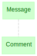

UUIDs#
Background#
Universally Unique Identifiers (UUIDs) provide convenient mechanisms for identifying pieces of information (objects) inside an information system. Various conventions exist. However, general patterns have been established and formalized as RFC 4122.
Comprised of hex digits, UUIDs have the pattern 8-4-4-4-12, e.g. e45ba2cc-39db-11e9-8e62-7470fdf23ef1.
It adds up to 36 characters (32 hex + 4 hyphens), or 16 bytes of information (128 bits).
Python provides a UUID module in its standard library.
import uuid
help(uuid.uuid1)
Help on function uuid1 in module uuid:
uuid1(node=None, clock_seq=None)
Generate a UUID from a host ID, sequence number, and the current time.
If 'node' is not given, getnode() is used to obtain the hardware
address. If 'clock_seq' is given, it is used as the sequence number;
otherwise a random 14-bit sequence number is chosen.
uuid.uuid1()
UUID('e03e1dec-768e-11ee-be05-acde48001122')
# use the current hardware address and time
[uuid.uuid1() for _ in range(8)]
[UUID('e03f9726-768e-11ee-be05-acde48001122'),
UUID('e03f9794-768e-11ee-be05-acde48001122'),
UUID('e03f97b2-768e-11ee-be05-acde48001122'),
UUID('e03f97d0-768e-11ee-be05-acde48001122'),
UUID('e03f97e4-768e-11ee-be05-acde48001122'),
UUID('e03f9802-768e-11ee-be05-acde48001122'),
UUID('e03f9816-768e-11ee-be05-acde48001122'),
UUID('e03f982a-768e-11ee-be05-acde48001122')]
# use the current hardware address and time
[uuid.uuid1() for _ in range(5)]
[UUID('e040a6de-768e-11ee-be05-acde48001122'),
UUID('e040a738-768e-11ee-be05-acde48001122'),
UUID('e040a760-768e-11ee-be05-acde48001122'),
UUID('e040a774-768e-11ee-be05-acde48001122'),
UUID('e040a788-768e-11ee-be05-acde48001122')]
# use fixed values
[uuid.uuid1(3, 1) for _ in range(5)]
[UUID('e04198b4-768e-11ee-8001-000000000003'),
UUID('e0419954-768e-11ee-8001-000000000003'),
UUID('e0419986-768e-11ee-8001-000000000003'),
UUID('e04199a4-768e-11ee-8001-000000000003'),
UUID('e04199c2-768e-11ee-8001-000000000003')]
help(uuid.uuid1)
Help on function uuid1 in module uuid:
uuid1(node=None, clock_seq=None)
Generate a UUID from a host ID, sequence number, and the current time.
If 'node' is not given, getnode() is used to obtain the hardware
address. If 'clock_seq' is given, it is used as the sequence number;
otherwise a random 14-bit sequence number is chosen.
help(uuid.uuid3)
Help on function uuid3 in module uuid:
uuid3(namespace, name)
Generate a UUID from the MD5 hash of a namespace UUID and a name.
help(uuid.uuid5)
Help on function uuid5 in module uuid:
uuid5(namespace, name)
Generate a UUID from the SHA-1 hash of a namespace UUID and a name.
top = uuid.UUID('00000000-0000-0000-0000-000000000000')
top
UUID('00000000-0000-0000-0000-000000000000')
topic = uuid.uuid5(top, 'Neuroscience')
topic
UUID('913e0174-a390-5c08-b50a-623690546dd5')
subject1 = uuid.uuid5(topic, 'Habenula')
subject1
UUID('b5804c3f-57b1-54e3-8176-3b45aa443a97')
top = uuid.UUID('00000000-0000-0000-0000-000000000000')
topic = uuid.uuid5(top, 'Neuroscience')
subject1 = uuid.uuid5(topic, 'Habenula')
subject2 = uuid.uuid5(topic, 'Entorhinal cortex')
subject3 = uuid.uuid5(topic, 'Habenula')
topic = uuid.uuid5(top, 'Philosophy')
subject4 = uuid.uuid5(topic, 'Habenula')
topic, subject1, subject2, subject3, subject4
(UUID('345b4a08-7955-5b86-8646-f0826799afe9'),
UUID('b5804c3f-57b1-54e3-8176-3b45aa443a97'),
UUID('58571fff-c6bd-583f-88ac-ef0b8ff2981f'),
UUID('b5804c3f-57b1-54e3-8176-3b45aa443a97'),
UUID('6340129b-3a59-5354-aec6-5df769ae2ce7'))
uuid.uuid5(subject4, 'study'*1000000)
UUID('3d9d9035-dec3-5fc8-b66c-38cd8537acbe')
help(uuid.uuid4)
Help on function uuid4 in module uuid:
uuid4()
Generate a random UUID.
[uuid.uuid4() for _ in range(12)]
[UUID('1e3dfa37-2315-4b34-9a31-2a0ac66fb2b9'),
UUID('6812b55c-ecc6-4384-9119-1c88b63a974f'),
UUID('f9e6e094-2ff2-4b94-a604-8a4540d03065'),
UUID('0e98d010-d306-4b38-ba50-4fb41f3c6443'),
UUID('a7c65a26-71c3-4751-a976-a0a0c479fd4d'),
UUID('c14a124f-f74b-4c88-b3e5-d2ab7058473b'),
UUID('affea70c-42cc-4ead-8b50-bd6449a9a386'),
UUID('afb2219c-f0e0-4bbf-8839-28e54cecb0bb'),
UUID('65e35258-a7cb-4611-ae07-a84cf3677c8c'),
UUID('0b6f8254-f0d9-48c4-8fe8-641aa25d081a'),
UUID('0cf7616c-557d-4ff2-9e90-0686c923c04e'),
UUID('4de8b980-f646-464a-9bb0-4b2ff3efb758')]
UUIDs in DataJoint#
import datajoint as dj
dj.__version__
'0.13.3'
schema = dj.schema('dimitri_uuid')
Connecting root@127.0.0.1:3306
---------------------------------------------------------------------------
ConnectionRefusedError Traceback (most recent call last)
File /Library/Frameworks/Python.framework/Versions/3.10/lib/python3.10/site-packages/pymysql/connections.py:613, in Connection.connect(self, sock)
612 try:
--> 613 sock = socket.create_connection(
614 (self.host, self.port), self.connect_timeout, **kwargs
615 )
616 break
File /Library/Frameworks/Python.framework/Versions/3.10/lib/python3.10/socket.py:845, in create_connection(address, timeout, source_address)
844 try:
--> 845 raise err
846 finally:
847 # Break explicitly a reference cycle
File /Library/Frameworks/Python.framework/Versions/3.10/lib/python3.10/socket.py:833, in create_connection(address, timeout, source_address)
832 sock.bind(source_address)
--> 833 sock.connect(sa)
834 # Break explicitly a reference cycle
ConnectionRefusedError: [Errno 61] Connection refused
During handling of the above exception, another exception occurred:
OperationalError Traceback (most recent call last)
Input In [19], in <module>
----> 1 schema = dj.schema('dimitri_uuid')
File /Library/Frameworks/Python.framework/Versions/3.10/lib/python3.10/site-packages/datajoint/schemas.py:69, in Schema.__init__(self, schema_name, context, connection, create_schema, create_tables, add_objects)
67 self.declare_list = []
68 if schema_name:
---> 69 self.activate(schema_name)
File /Library/Frameworks/Python.framework/Versions/3.10/lib/python3.10/site-packages/datajoint/schemas.py:100, in Schema.activate(self, schema_name, connection, create_schema, create_tables, add_objects)
98 self.connection = connection
99 if self.connection is None:
--> 100 self.connection = conn()
101 self.database = schema_name
102 if create_schema is not None:
File /Library/Frameworks/Python.framework/Versions/3.10/lib/python3.10/site-packages/datajoint/connection.py:119, in conn(host, user, password, init_fun, reset, use_tls)
117 init_fun = init_fun if init_fun is not None else config['connection.init_function']
118 use_tls = use_tls if use_tls is not None else config['database.use_tls']
--> 119 conn.connection = Connection(host, user, password, None, init_fun, use_tls)
120 return conn.connection
File /Library/Frameworks/Python.framework/Versions/3.10/lib/python3.10/site-packages/datajoint/connection.py:178, in Connection.__init__(self, host, user, password, port, init_fun, use_tls)
176 self._conn = None
177 self._query_cache = None
--> 178 connect_host_hook(self)
179 if self.is_connected:
180 logger.info("Connected {user}@{host}:{port}".format(**self.conn_info))
File /Library/Frameworks/Python.framework/Versions/3.10/lib/python3.10/site-packages/datajoint/connection.py:45, in connect_host_hook(connection_obj)
42 raise errors.DataJointError(
43 "Connection plugin '{}' not found.".format(plugin_name))
44 else:
---> 45 connection_obj.connect()
File /Library/Frameworks/Python.framework/Versions/3.10/lib/python3.10/site-packages/datajoint/connection.py:201, in Connection.connect(self)
199 warnings.filterwarnings('ignore', '.*deprecated.*')
200 try:
--> 201 self._conn = client.connect(
202 init_command=self.init_fun,
203 sql_mode="NO_ZERO_DATE,NO_ZERO_IN_DATE,ERROR_FOR_DIVISION_BY_ZERO,"
204 "STRICT_ALL_TABLES,NO_ENGINE_SUBSTITUTION,ONLY_FULL_GROUP_BY",
205 charset=config['connection.charset'],
206 **{k: v for k, v in self.conn_info.items()
207 if k not in ['ssl_input', 'host_input']})
208 except client.err.InternalError:
209 self._conn = client.connect(
210 init_command=self.init_fun,
211 sql_mode="NO_ZERO_DATE,NO_ZERO_IN_DATE,ERROR_FOR_DIVISION_BY_ZERO,"
(...)
215 if not(k in ['ssl_input', 'host_input'] or
216 k == 'ssl' and self.conn_info['ssl_input'] is None)})
File /Library/Frameworks/Python.framework/Versions/3.10/lib/python3.10/site-packages/pymysql/connections.py:353, in Connection.__init__(self, user, password, host, database, unix_socket, port, charset, sql_mode, read_default_file, conv, use_unicode, client_flag, cursorclass, init_command, connect_timeout, read_default_group, autocommit, local_infile, max_allowed_packet, defer_connect, auth_plugin_map, read_timeout, write_timeout, bind_address, binary_prefix, program_name, server_public_key, ssl, ssl_ca, ssl_cert, ssl_disabled, ssl_key, ssl_verify_cert, ssl_verify_identity, compress, named_pipe, passwd, db)
351 self._sock = None
352 else:
--> 353 self.connect()
File /Library/Frameworks/Python.framework/Versions/3.10/lib/python3.10/site-packages/pymysql/connections.py:664, in Connection.connect(self, sock)
662 if DEBUG:
663 print(exc.traceback)
--> 664 raise exc
666 # If e is neither DatabaseError or IOError, It's a bug.
667 # But raising AssertionError hides original error.
668 # So just reraise it.
669 raise
OperationalError: (2003, "Can't connect to MySQL server on '127.0.0.1' ([Errno 61] Connection refused)")
@schema
class Message(dj.Manual):
definition = """
message_id : uuid # internal message id
---
message_body : varchar(1000)
"""
Message.describe();
# For the curious: Internally, DataJoint represents uuids as BINARY(16)
Message.heading['message_id'].sql
'`message_id` binary(16) NOT NULL COMMENT ":uuid:internal message id"'
Message.insert1((uuid.uuid1(), 'Hello, world!'))
Message.insert1((uuid.uuid1(), 'Cogito ergo sum'))
Message()
| message_id internal message id | message_body |
|---|---|
| d79bd2ce-394a-11ed-b8e5-acde48001122 | Hello, world! |
| d7a8b46c-394a-11ed-b8e5-acde48001122 | Cogito ergo sum |
Total: 2
Message.insert1((uuid.uuid1(), 'I will be back'))
Message.insert1((uuid.uuid1(), 'Must destroy humans.'))
b = uuid.uuid4().bytes
b
uuid.UUID(bytes=b)
Message()
Message.insert1((uuid.uuid4(), 'Hasta la vista baby'))
Message()
@schema
class Comment(dj.Manual):
definition = """
comment_id : uuid
---
-> Message
comment_body : varchar(1000)
"""
# For the curious: This is how the table was declared in SQL
print(schema.connection.query('show create table `dimitri_uuid`.`comment`').fetchall()[0][1])
dj.Diagram(schema)

keys = Message.fetch('KEY')
keys
Comment.insert1(dict(keys[0], comment_id=uuid.uuid1(), comment_body="thank you"))
Message* Comment
Message * Comment & keys[0]
Message & keys[1:4]
Comment.insert1(dict(keys[1], comment_id=uuid.uuid1(), comment_body="thank you"))
Comment()
Message & Comment
Message * Comment